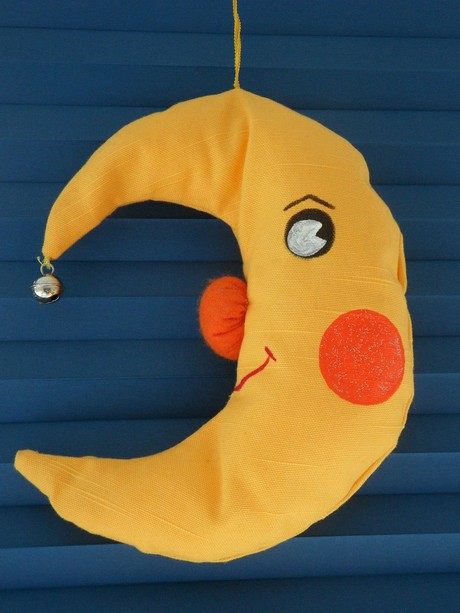

Guía de estudio para el JLPT N5: Las 19 expresiones más básicas
Una vez terminadas las secciones de la guía sobre gramática parte 1, parte 2, kanji y partículas que se evaluan en el exámen JLPT N5, abordaré las expresiones más comunes que son evaluadas durante el exámen.
Si ésta es tu primera vez leyendo la guía, te invito a conocer las demás secciones que he escrito, haciendo click en la etiqueta JLPT-N5.
1. Muchas gracias

Imagen tomada por gwaar
どうもありがとうございます。
doumo arigatou gozaimasu.
2. Gracias por la comida

La imagen fue tomada por Sakurako
いただきます。
itadakimasu.
Se dice justo antes de empezar a comer.
3. Bienvenido (a la tienda)

Imagen tomada por Jessica
いらっしゃいませ。
irasshaimase.
Bienvenido a nuestra tienda. Esta frase la escucharas por parte de los empleados siempre que entres a una tienda o restaurante en Japón.
4. Nos vemos

Imagen vía massimo
（では）お元気で。
(dewa) o genki de.
Literalmente significa, manténte sano. Es una forma de decir adiós.
5. Por favor
Imagen vía bunnyrel
お願いします。
onegai shimasu.
Por favor (haga esto por mi)
6. Buenos días
お早うございます。
ohayou gozaimasu.
Es la forma más formal de decir buenos días. La mas informal es “ohayou”.
7. Que descanses

お休みなさい。
oyasumi nasai.
Significa algo como, que descanses, que duermas bien. Se usa justo antes de irte a acostar. La forma más informal es decir “oyasumi”.
8. Gracias por la comida (después de comer)
Imagen via ochre
ごちそうさまでした。
gochisousama deshita.
Lo usas después de comer. También lo dices cuando sales de un restaurante o cuando el mesero retira el plato.
9. Igualmente
こちらこそ。
kochirakoso.
Igualmente. Si buscan el significado en inglés lo traducirían como “Soy yo el que quiere decirlo”.
10. Lo siento
ごめんなさい。
gomennasai.
Lo siento.
11. Hola

Imagen tomada vía giphy del anime One Piece
今日は。
konnichiwa.
Hola, ten un buen día.
12. Buenas noches
今晩は。
konban wa.
Buenas noches.
13. Adiós

Imagen via giphy
さようなら。
sayounara.
Adiós. Se usa para despedidas en que no verás a la persona por mucho tiempo.
14. Perdón por mi imprudencia
Tomado via kaptain kobold
失礼します o 失礼しました。
shitsurei shimasu o shitsurei shimashita.
Literalmente, “Cometeré una imprudencia / cometí una imprudencia”. Por lo general se usa cuando quieres disculparte por algo.
15. Disculpe
すみません。
Sumimasen.
Disculpe. Es una forma mas ligera de decir “shitsurei shimasu”.
16. Nos vemos luego
では、また。
dewa, mata.
Nos vemos luego. Hasta luego.
17. De nada
（いいえ）どういたしまして。
(iie) dou itashimashite.
De nada. Fue un placer.
18. Un placer conocerte
初めまして.
hajimemashite.
Un placer conocerte.
19. Fue un placer conocerte
どうぞよろしく。
douzo yoroshiku.
Encantado de haberte conocido.
Bueno, eso fue todo por esta sección, espero te haya servido para repasar las expresiones más básicas. Si eres de los que está preparandose para el exámen esto debe ser pan comido para ti, en caso de no ser así, esfuerzate mucho jeje.
Nos vemos la otra semana! また来週！
Vía NI
Composición de la imagen principal por Carlos Insignares
Artículos Relacionados

Guía de estudio para el JLPT N5: Adjetivos i parte 2

Guía de estudio para el JLPT N5: Adjetivos i parte 1